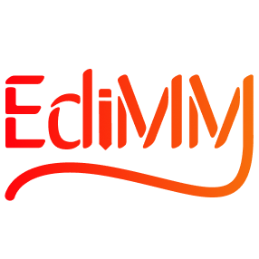
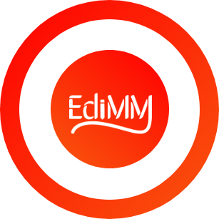
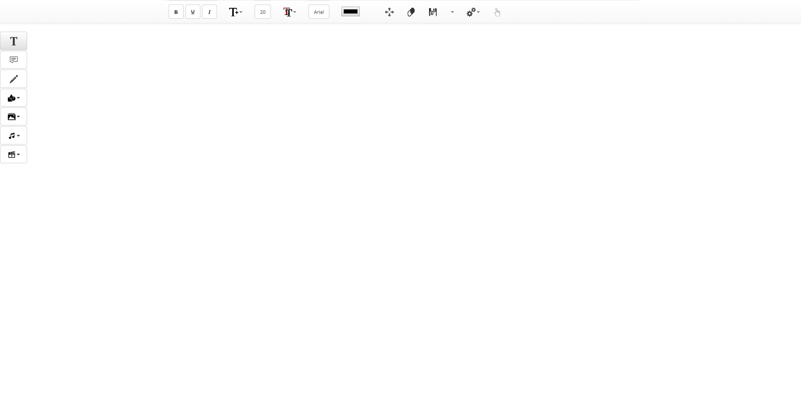
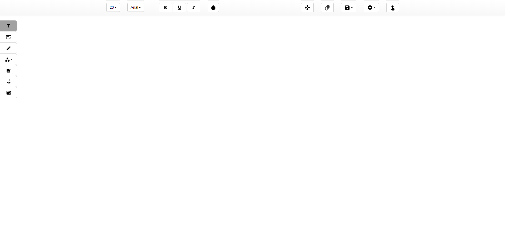
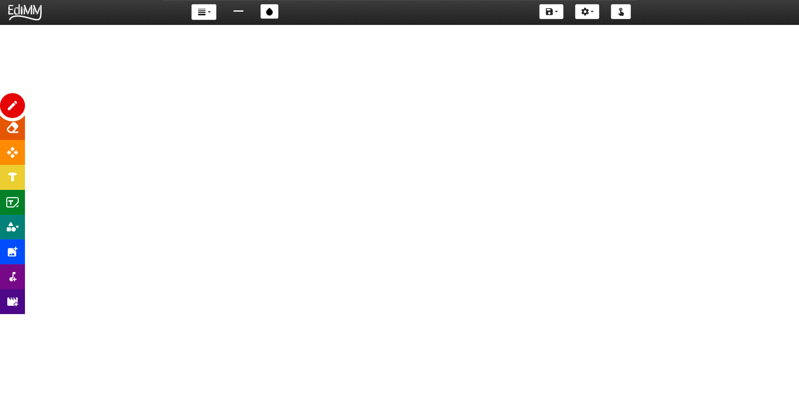

Trabalho de Iniciação científica - Editor de Texto Multissemiótico e Multimodal.



Trabalho de Iniciação científica - Editor de Texto Multissemiótico e Multimodal.
O Editor de Texto Multissemiótico e Multimodal (EdiMM) é uma ferramenta para construir textos que envolve imagens, sons, vídeos, palavras escritas e digitadas, em um único documento.
Da mesma forma, é uma ferramenta de interação multimodal, ou seja, deve possuir diferentes modalidades de entrada (como teclado, toque, mouse e caneta).
No EdiMM foram empregadas as tecnologias HTML, JavaScript, JQuery, CSS e Bootstrap para a implementação da interface de usuário em conjunto com técnicas de Design Responsivo de modo que o editor possa ser utilizado em diferentes dispositivos.
| · 2015 · | Desenvolvimento do protótipo e análise de viabilidade. |
| · 2016 · | Desenvolvimento da primeira versão do produto. |
| · 2017 · | Responsividade para funcionamento em dispositivos móveis. |
| · 2018 · | Inclusão de recursos de sincronicidade (sessão multipla). |
| · 2019 · | Melhoria e investigação do uso do EdiMM em lousas digitais. |
| · | · |
| · | · |
| · | · |
| · 2020 · | Inclusão de suporte à interação por gestos. |
Interface do EdiMM

A partir disso, foi iniciada a criação da segunda versão do site, onde iria apresentar um novo modelo, de forma mais moderna e equilibrada, sendo mais agradável e simples.

Por fim, tomou-se novamente que esta versão não seria a mais funcional e seria melhor utilizar algo mais chamativo.


Acessar versão síncrona
Acessar Github